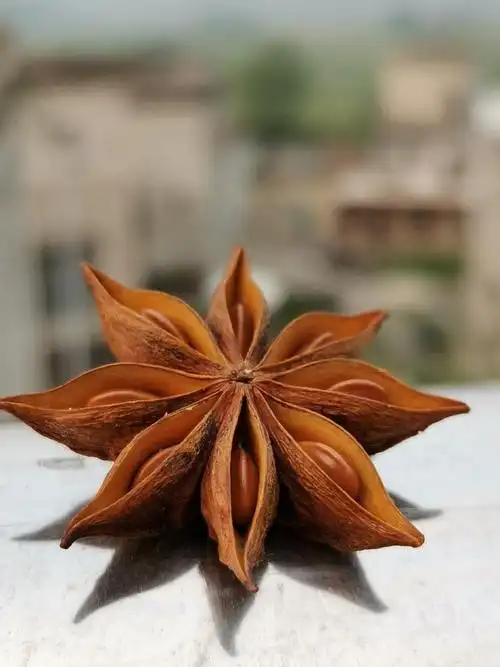
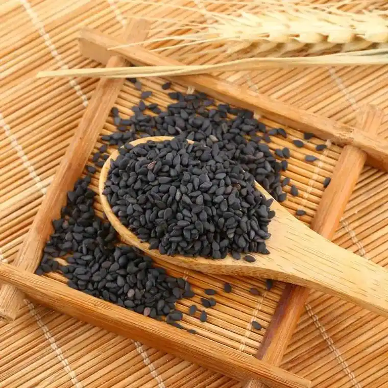
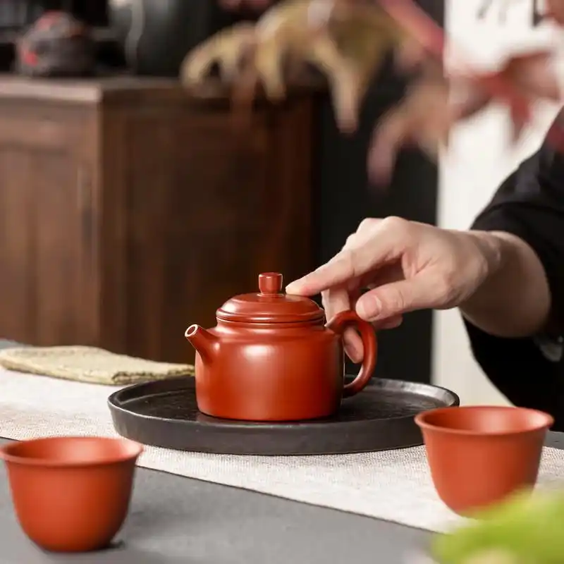
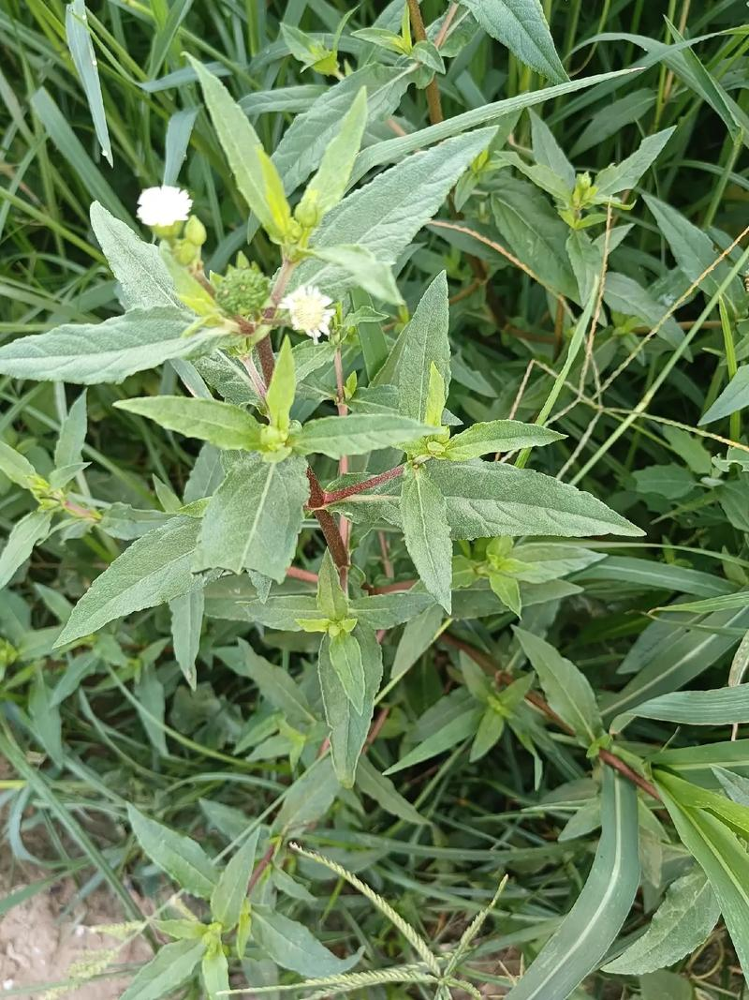

治疗心理 治疗生理
感悟中药
中医如何走向国际
针灸
中医药方知多少
《伤寒杂病论》
《伤寒杂病论》是中国传统医学著作之一，是一部论述外感病与内科杂病为主要内容的医学典籍，作者是东汉末年张仲景。
查看更多《千金方》
《千金方》、《千金要方》又称《备急千金要方》，是中国古代中医学经典著作之一，共30卷，是综合性临床医著，被誉为中国最早的临床百科全书。唐朝孙思邈所著。
查看更多《本草纲目》
《本草纲目》中国古代药学史上部头最大、内容最丰富的药学巨著。明代李时珍撰成于1578年。它被誉为“东方医药巨典”、“中国古代百科全书”。
查看更多中医药材
-
八角茴香：香料背后的传奇药材！
- 大闸蟹驱寒：健康饮食养生的天花板！
-
黑芝麻虽好，但应适量食用，过量食用可能增加肠胃负担!
-
秋季养生茶饮：迎接金秋健康美味！
- 灯笼草的种植方法及其治热咳咽痛！
-
旱莲草是一种生命力很顽强的药用野草！
中医养生
- 越“冻”越要动！冬季运动正确打开方式！
- 喝完补气中药为何放屁增多：解析与应对
- 如何通过中医料理的方法来缓解和治疗口臭?
- 蜂乳能够刺激机体的生长和发育，延缓衰老过程！
- 每天在家做这几件小事,让你身体越来越健康！
- 预防佝偻病的方法有哪些？
中医药方
- 中药碎骨子的功效与作用及其药用禁忌有哪些？
- 关木通虽然有清热泻火的作用，但是其药材毒性却远大于药用功效！
- 青木香治皮肤湿烂疮，青木香的用药方法？
- 中医教你用紫珠叶外敷可清热解毒，治疗多种出血症！
- 中药独脚柑不仅可用来清肝明目，还有驱虫止痛的作用！
- 古方中的地骨皮药方虽然配药简单，但其药用功效可不敢小视！
↑